The MLPQ/GIS Constraint Database System
P. Revesz, R. Chen, P. Kanjamala, Y. Li, Y. Liu, Y. Wang
The current version of the MLPQ/PReSTO system merges the MLPQ/GIS and
the PReSTO constraint database systems, which were both built at the
University of Nebraska-Lincoln partially funded by the USA NSF under
grants IRI-9625055 and IRI-9632871. The executable file of the
MLPQ/PReSTO system, running Microsoft 2000, and all the sample text
files listed in the appendix are available free as down-loadable files
from the webpage: http://www.cse.unl.edu/ revesz, which also
contains a list of publications related to both the MLPQ/GIS and the
PReSTO systems. The present HTML document gives a brief introduction
to the MLPQ/PReSTO system, based on the demo given by the authors at
SIGMOD'2000 and extended with recent work on the PReSTO system by
M. Cai, D. Keshwani, and P. Revesz.
MLPQ/PReSTO accepts as input a ``.txt'' file. The input file can
be opened by going to the {File} menu, and selecting the {Open}
dialog. The syntax of the input is almost the same as that of
traditional Datalog, with the following restrictions:
In the MLPQ/PReSTO system each input file is a set of rules bracketed
by the keywords begin and end. It has the following
structure:
begin %moduleName%
end %moduleName%
where each is a rule or a constraint tuple, and moduleName
is a string. The module name should be the following.
``MLPQ'' - when each rule is as described in Section 1.1
and the program in the input file is non-recursive.
``RECURSIVE'' - when each rule is as described in Section 1.1
and the program in the input file is recursive.
``GIS'' - when each rule is as described in Section 1.2.
``STDB'' - when each rule is as described in Section 1.3.
MLPQ linear constraint rules may be specified in the form of
equation (4.1) in the textbook, or as in Chapter 5 with the following
differences.
First, each linear constraint must have the form
where each
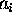
is a constant and each 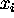
is a variable, and
is a relational operator of the form =, <, >, <=,
>=.
Second, the optional aggregate operator has the form OP(f) where OP
is one of the aggregate operators max, min, MAX, MIN,
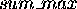
or 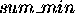
, and f is a linear function of the
variables in the rule. The aggregate operators have the following
meanings.
max - gets maximum value for each constraint tuple.
sum_max - finds the sum of the values returned by max.
MAX - finds the maximum of the values returned by max.
min, MIN and sum_min are defined similarly to the above.
Third, for negation the symbol ! is used instead of not.
We sometimes restrict the head of the rules to be one of the following:
r(id,x,y), or r(id,x,y,t) or r(id,x,y,z) where id is the
identification number of an object, and x,y are two spatial
variables, which could be augmented by a temporal variable t or a
third spatial variable z. These cases of linear constraint
databases allow us to do some extra operations that are special to GIS
objects.
-
PReSTO Relation: A relation R in PReSTO is defined as follows:
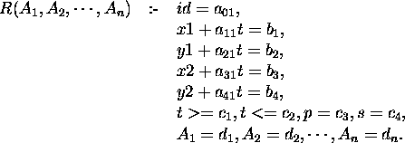
where
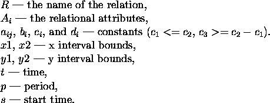
Note: For non-periodic relations,
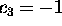
, 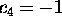
. The attributes
id, x1, y1, x2, y2, t, p, s are default attributes. -
PReSTO Database: The PReSTO database must use ``STDB'' as the module
name; that is, the input file must have the structure:
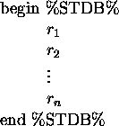
-
PReSTO Query:
- Define a relation with non-default attributes.
Example: Define the cloud relation with the attribute humidity.
clouds(h) :- i=1,
x1 - t = 105,
y1 - 0.5t = 200,
x2 - t = 111,
y2 - 0.6t = 205,
t >=0, t<=300,
p = -1, s = 0,
h = 0. - Selection:
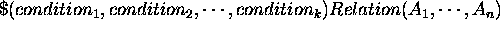
.
Example: Find the cool area in Nebraska.
begin %STDB%
Nebraska(temp) :- i=1, x1=4, y1=4.5, x2=19.5, y2=14.5,
t>=1,t<=15, p=-1,temp=30.
Nebraska(temp) :- i=2, x1=20, y1=4.5, x2=35, y2=14.5,
t>=1,t<=15, p=-1,temp=90.
Nebraska(temp) :- i=3, x1=35.5, y1=5, x2=46, y2=14.5,
t>=1,t<=15, p=-1,temp=60.
cool_area(temp):- $(temp>=50,temp<=80)nebraska(temp).
end %STDB% - Projection:
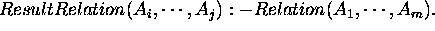
- Intersection: Relation1 * Relation2.
Example: Find if the ship and the torpedo will meet with each other.
begin %STDB%
ship() :- i=1,
x1-t=20,y1=20,
x2-t=30,y2=25,
t>=0,t<=25,
p=-1,s=-1.
torpedo() :- i=1,
x1=45,y1+t=45,
x2=48,y2+t=51,
t>=0,t<=25,
p=-1,s=-1.
hit() :- ship() * torpedo().
end %STDB%
The MLPQ/PReSTO graphical user interface shown in Figure 1
contains a list of iconic queries.
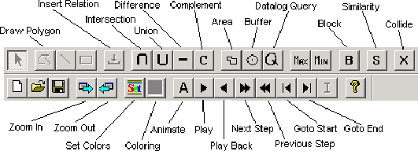
Figure 1: MLPQ Graphical User Interface
Section 1: The [Query (Q)] Operator and [Buffer] Operator
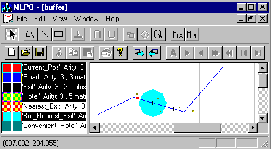
Figure 2: Buffer Example
-
Consider Figure 2 which shows a map of interstate highway I-80,
the location of hotels, the locations of exits form the highway, and
the current location of a car traveling from west to east on the
highway.
Query: Find a convenient hotel to stay for the night.
This is done by finding the nearest exit east of the current location
of the car and then find the hotel within 50 miles from that exit.
- Click [Q], input the query to get the nearest exit on the
east.
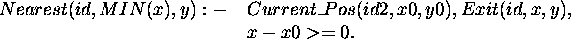
- Select ``Nearest'' Relation, click [Buffer].
- Input name ``Buf_Nearest'', and the Distance ``50''.
- Click [Q], input the query to get the convenient hotel away
from at most 50 miles.
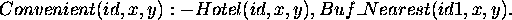
Section 2: The [Line] Operator, [Rectangle] Operator and [Polygon] Operator
-
Drawing Line:
- Open a non-empty database (i.e., a database that already
contains at least one relation);
- Left click the right window;
- Left click [Line];
- Left click the mouse to get one point, move mouse, then left
click the mouse to get another point;
- Input the relation name ``Line1'' (any string) to get the line
relation ``Line1''.
-
Drawing Rectangle:
- Open a non-empty database (i.e., a database that already
contains at least one relation);
- Left click the right window;
- Left click [Rectangle];
- Left click the mouse to get one point, move mouse, then left click
the mouse to get another point;
- Input the relation name ``Rectangle1'' (any string) to get the
rectangle relation ``Rectangle1''.
-
Drawing Polygon:
- Open a non-empty database (i.e., a database that already
contain at least one relation);
- Left click the right window;
- Left click [Polygon];
- Left click the mouse to get one point, continue to left click
the mouse to get other points;
- Double click to finish the drawing.
- Input the relation name ``Polygon1'' (any string), and the
Object ID ``1'' (any integer number) to get the polygon relation
``Polygon1''.
-
Show Constraints: After operation 2, left click the relation
``New_relation'' in the left window, to get the dialog which shows the
constraints of this relation.
Section 3: The [Zoom Out] Operator and [Zoom In] Operator
-
To enlarge or shrink the displayed object, click [Zoom In] or [Zoom
Out].
-
Left push down the mouse, include the object, then release the
button. The selected object will be enlarged.
Section 4: The [Area] Operator
-
Area: Calculate the area of relation ``Buf_Nearest''.
- Select the Generated relation ``Buf_Nearest'' in the left
window.
- Click [Area].
- Input the MinX, MaxX, and Step Size of the area to be
calculated. By referring the coordinates of the window, input the
number for MinX ``0'', and MaxX ``400'', and the Step Size ``400'', then
get the total area of the relation since it is in the region
totally.
- Input the area relation name ``Buf_Nearest_Area'', left click it
to show the area in constraints.
Note: The step size is to get various aggregate information
for different bands of the object.
-
Bands Area: Calculate the area of relation ``Buf_Nearest'' with bands.
- Select the Generated relation ``Buf_Nearest'' in the left
window.
- Click [Area].
- Input the MinX ``0'', the MaxX ``400'', the Step Size ``200''.
- Input the relation name ``Buf_Nearest_Area'', left click it to
show the areas of these two bands from 0 to 200 and 200 to 400 in
constraints.
Section 5: The [Intersection ( )] Operator and [Union ( )] Operator
-
Intersection: Calculate the intersection of two relations.
- Select two relations from the left window which have the same
attributes.
- Click [ ].
- Input relation name ``Intersect'' which is the intersection of
these two relations.
Note: For intersection, the system also matches the ids of the
objects. So if two objects have the different ids, then the
intersection would be empty.
Hint: To make two relations R1(id, x, y) and R2(id, x, y) have
the same id, insert the following Datalog query (``New_R1'' and
``New_R2'' will have the same id ``1''):
-
Union: Calculate the union of two relations.
- Select two relations from the left window.
- Click [ ].
- Input the relation name ``Union'' which is the union of these
two relations.
Note: for union, these two relations need not to have the same
id since they are still in the output even they have different ids.
Section 6: The [Max] Operator and [Min] Operator
-
Max: Calculate the maximum value for a given evaluation function.
- crops.txt: Calculate the maximum profit for the
evaluation function: 300corn + 250rye + 100sunflower + 150wheat.
- Select the relation ``crops'' from the left window.
- Click [Max].
- Input new relation name ``max_profit'', the evaluation
function ``300corn+250rye+100sunflower+150wheat'', and the
constant value for the evaluation function is ``0''.
- Right click the relation ``max_profit'' to show the maximum
profit.
-
Min: Calculate the minimum value for a given evaluation function.
- Select one relation from the left window.
- Click [Min].
- Input new relation name ``min_rel'', the evaluation function,
and the constant value for the evaluation function.
- Right click the relation ``min_rel'' to show the minimum value.
Note: The [Max] and [Min] operators only work for the
evaluation function which will return the positive maximum/minimum
value.
Section 7: The 2D Animation
-
sface.txt: select relations one by one, then click [Play], then see
the face becomes smiling.
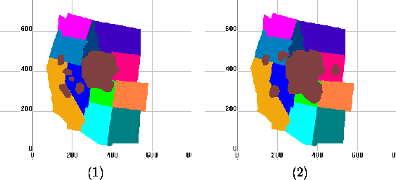
Figure 3: Two Snapshots of a Video on California Gull Ranges
-
Consider Figure 3 which shows two snapshots of the
habitat range of the California Gull birds. The data is available in
file sgull.txt. Select all except Gull, then select ``Gull''
relation, then click [Play], then see the gull changing.
Query 1: How much did the area of the California Gull
change from 1970 to 1990?
- Click [Q] to insert the query to get the Gull snapshot at
1970:
- Click [Q] to insert the query to get the Gull snapshot at
1990:
- Click the relation ``Gull0'', then click [Area] to get the area
of the Gull at 1970. Input the MinX=0, MaxX=500 and Step=500. Give
the name of the area of the relation ``Gull0'' as ``Gull0_Area''.
- Click the relation ``Gull60'', then click [Area] to get the area
of the Gull at 1990. Input the MinX=0, MaxX=500 and Step=500. Give
the name of the area of the relation ``Gull60'' as ``Gull60_Area''.
- Click [Q] to insert the query to get the area difference of
the California Gull t between 1970 and 1990:
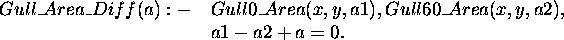
- Right Click the relation ``CA_Gull_Area_Diff'' to show the
constraints and the area difference.
Query 2: How much did the area of the California Gull
change from 1970 to 1990 in the state of California?
- Click [Q] to insert the query to get the Gull snapshot at 1970:
- Click [Q] to insert the query to get the Gull snapshot at 1990:
- Select the relation ``Gull70'' and ``CA'', then click [ ] to get
the area of the Gull at 1970 in the state of California. Input the
relation name ``CA_Gull70''.
- Click the relation ``Gull90'' and ``CA'', then click [ ] to get
the area of the Gull at 1990 in the state of California. Input the
relation name ``CA_Gull90''.
- Click the relation ``CA_Gull70'', then click [Area] to get the
area of the Gull at 1970 in the state of California. Input the
MinX=0, MaxX=500 and Step=500. Give the name of the area of the
relation ``CA_Gull70'' as ``Gull70_Area''.
- Click the relation ``CA_Gull90'', then click [Area] to get the
area of the Gull at 1990 in the state of California. Input the
MinX=0, MaxX=500 and Step=500. Give the name of the area of the
relation ``CA_Gull90'' as ``Gull90_Area''.
- Click [Q] to insert the query to get the area difference of
the California Gull t between 1970 and 1990 in the state of
California:
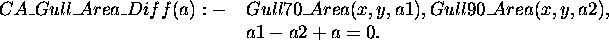
- Right Click the relation ``CA_Gull_Area_Diff'' to show the
constraints and the area difference.
-
Consider the file slincoln.txt. Select ``City'' relation, then click
[Play], then see the Lincoln, Nebraska city area changing.
Section 8: The Exponential 2D Animation
-
mulcolony.txt:
- Select the relation from the left window.
- Click [(Animation (A)] then click ``Yes'' for observing the
exponential animation.
Note: If click [A] then click ``No'', then execute the linear
animation.
-
sincolony.txt: Click [(Animation (A)] then click ``Yes'' for
observing the exponential animation.
-
sinirreg.txt: Click [(Animation (A)] then click ``Yes'' for
observing the exponential animation.
-
threecolony.txt: Click [(Animation (A)] then click ``Yes'' for
observing the exponential animation.
Section 9: Recursive Queries
-
houses.txt: the relation ``can_build'' is created by recursive
Datalog query. See the constraint tuples of the relation.
-
pollution.txt: the relation ``oktobuy'' is created by recursive
Datalog query. See the constraint tuples of the relation, not the
display result.
-
powernew.txt: the relation ``can_build'' is created by
recursive Datalog query. See the constraint tuples of the relation,
not the display result.
Note: For [Q] Operator, the recursive query only can be inserted
into recursive database, that is, the new recursive query could be
inserted only when the current database is recursive.
Section 10: The Transformation from the TIN to Constraint Database
-
tin_ia.net: Transform the TIN of Iowa to constraint database.
- Click menu {New}, then click submenu {File}, click {Import
File}, then click {Elevation File}.
- Choose the file ``tin_ia.net''.
- Input the relation name ``tin_ia'', then input ``tin_ia_ascii'' in
the third filed, click ok button to Generate the constraint file
``tin_ia.txt''.
- Use Notepad to open the file ``tin_ia.txt'' to see the
transformed constraints.
Note: The file ``tin_ia.net'' is the TIN structure of Iowa State
with the longitude, latitude and elevation for each point. The file
``tin_ia_ascii'' includes the slope and aspect of each point.
-
tin_ne.net: Transform the TIN of Nebraska to constraint database.
- Click menu {New}, then click submenu {File}, click {Import
File}, then click {Elevation File}.
- Choose the file ``tin_ne.net''.
- Input the relation name ``tin_ne'', then input ``tin_ne_ascii'' in
the third filed, click ok button to generate the constraint file
``tin_ne.txt''.
- Use Notepad to open the file ``tin_ne.txt'' to see the
transformed constraints.
Section 11: The Transformation from Polygon File to Constraint Database
-
veg90.pol: Transform polygon file to constraint database.
- Click menu {New}, then click submenu {File}, click {Import
File}, then click {Elevation File}.
- Choose the file ``veg90.pol''.
- Input the relation name ``vege''.
- Click the ``vege'' relation in the left window, you will see the
constraint tuples of these polygons.
Section 12: The [Similarity (S)] Operator for Similarity Queries
-
db.lin: Query similarities among the lines.
- Click menu {New}, then click submenu {File}, then click
{Import File}, then click {Import Line}.
- Select the file ``db.lin''.
- Input the relation name ``lines''.
- Then select any one relation, then click [S], then the
relations are ordered as the similarity order from the specified
one.
Section 13: Querying Maps
-
usmap_info.txt:
- Select all of the relations, then see the U.S. map with 50
states.
- The scale of this map is shown by clicking the constraints of
the relation ``Scale'', the unit is kilometer.
- The ``Capital'' relation is the capital cities of the states.
Query 1: Find the capital city of Nebraska:
- Click [Q], then input
- Right click the relation ``NE_capital'' to see the capital city
of Nebraska State.
Query 2: Find the area of the state of Nebraska in MST zone.
- Click [Q], then input
- Select the relation ``NE_MST'', then click [Area].
- Input MinX=0, MaxX=500 and Step=500.
- Input the name of the area relation as ``NE_MST_Area''.
- Then right click the relation ``NE_MST_Area'' to see the area of
the state of Nebraska in MST zone.
Section 1: The [Set] Operator and [Color Relation] Operator for Color Bands Display
-
Color_Circle.txt:
- Select ``Circle'' relation, see the monochromatic circle.
- Select ``NEW_Circle'' relation, then click [Color Relation].
- Select the new Generated ``Color_NEW_Circle'' relation, see the
color circle (if not, click the {View} Menu, uncheck {Same Relation
Color} Option).
-
tin.txt:
- Select ``tin'' relation, click [Color Relation].
- Select the Generated ``Color_tin'' relation, then see the color
Nebraska (different colors stand for different heights of those
places).
-
tiniowa_final.txt:
- Select ``tiniowa_final'' relation, then click [Set], then click
add button in the dialog, then input ``1000'', ``5000'' and select ``red''
color. Then click the ok button.
- Then click [Color Relation], then select the new Generated
``Color_tiniowa_final'' relation, then see the red partial Iowa state
(only the heights between 1000 and 5000 are displayed). (If it's not
red, then select {View} menu, then uncheck {Same Relation Color}.)
-
tinne_final.txt:
- Select ``tinne_final'' relation, then click [Set], then click
add button, then input ``1000'', ``3000'' and select ``blue'' color. Then
click ok button.
- Then click [Color Relation], then select ``Color_tinne_final''
relation, then see the blue partial Nebraska state (only the heights
between 1000 and 3000 are displayed). (If it's not blue, then
select {View} menu, then uncheck {Same Relation Color}.)
-
tinresult.txt: Monochromatic map display. Select ``tin''
relation, then see the Nebraska state map, also shown in
Figure 4.
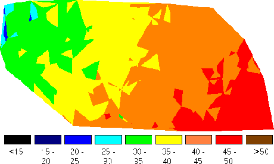
Figure 4: Mean Annual Air Temperature
Section 1: The [Intersection ( )] Operator and [Union ( )] Operator
-
weather.txt:
Query 1: Find which region is likely to get rain.
- Select the relation ``cool_area'' and ``wet_cloud'' from the left
window.
- Click [ ].
- Input a relation name ``get_rain'' which is the intersection of
these two relations.
Query 2: Find which region is likely to get snow.
- Select the relation ``cold_area'' and ``wet_cloud'' from the left
window.
- Click [ ].
- Input a relation name ``get_snow'' which is the intersection of
these two relations.
Query 3: Find which region is likely to get rain or get snow.
- Select the relation ``get_rain'' and ``get_snow'' from the left
window.
- Click [ ].
- Input a relation name ``get_rain_snow'' which is the union of
these two relations.
-
flight.txt:
Query: Will the plane hit the fleet?
- Select the relation ``plane'' and ``fleet'' from the left window.
- Click [ ].
- Input a relation name ``hit_fleet'' which is the intersection of
these two relations.
Section 2: The [Area] Operator
-
cloudmap.txt:
Query: Find the area of the clouds at time 10.
- Select the relation ``clouds'' from the left window.
- Click [Area].
- Input the time of the clouds ``10''.
- A dialog box pop up to give the area of the clouds at time
``10''.
Section 3: The [Difference (-)] Operator
-
cloudmap.txt:
- Select the relation ``california'' and ``clouds'' from the left
window.
- Click [-].
- Input the relation time ``diff''.
- Click the relation ``diff'' which shows the difference between
California and the clouds at time ``0''.
Section 4: The [Complement (C)] Operator
-
cloudmap.txt:
- Select the relation ``clouds'' from the left window.
- Click [C].
- Input the relation time ``comp''.
- Click the relation ``comp'' which shows the complement of clouds
at time ``0''.
Section 5: The [Query (Q)] Operator
-
weather.txt:
- Click [Q].
- To get the area where the temperature between 50 and 80, input
the query:
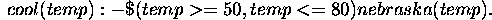
- Click the relation ``cool'' which shows the interested area.
Section 6: The [Collide (X)] Operator
-
collide.txt:
- Select all relations, then click [Play], then see both are
moving.
- Click [Collide], input the relation name ``collide''.
- Then select the new generated relation ``collide'', then click
[Play], then see them collide then bounce back from each other.
Section 7: The [Block (B)] Operator
-
yellowstone.txt: Foam blocks the fire.
- Select the relation ``lake'' and the relation ``foam1''.
- Click [ ], give the relation name ``blocks''.
- Select the relation ``blocks'' and the relation ``fire''.
- Click [Block], input the relation name ``blockfire'' and set
time ``10''.
- Click [Forward] button 10 times till t = 10. Then see the
snapshot of the blocked fire at that time.
Section 8: The 2D Animation
-
halley.txt: select all relations, then click [Play], then see Halley
hit some stars.
-
comet3.txt: select all relations, then click [Play], then see they
are moving.
-
flight.txt: select all relations, then click [Play], then see the
planes hit the targets.
-
shuttle.txt: select all relations, then click [Play], then see the
bus is moving.
-
torpedo.txt: select all relations, then click [Play], then see the
torpedo is moving.
-
weather.txt: select all relations, then click [Play], then see the
result.
-
cloudmap.txt:
- Select all relations except ``clouds'' relation, then select
``clouds'' relation, click [Play], then see the cloud is moving.
Two snapshots of the animation are shown in Figure 5.
Figure 5: Cloud at t=25 (left) and
t=182 (right) in the PReSTO system
- Click [Animation], change the speed to ``95'', then the
animation speed will be slower than it was ``100''.
APPENDIX: Input Databases
-
MLPQ Databases: The files in database/MLPQ are as follows:
Color_Circle.RNG
Color_Circle.txt
buffer.txt
cost.dat
Crops.txt
db.lin
houses.txt
linear.txt
mulcolony.txt
pollution.txt
powernew.txt
sface.txt
sgull.txt
sincolony.txt
sinirreg.txt
slincoln.txt
threecolony.txt
tin.RNG
tin.txt
tin_ia.net
tin_ia_ascii
tin_ia_data
tin_ne.net
tin_ne_ascii
tin_ne_data
tiniowa_final.txt
tinne_final.txt
tinresult.RNG
tinresult.txt
usmap_info.txt
veg90.pol
vege.ldb
vege.mdb
vege_db
-
PReSTO Database: The files in database/PReSTO are as follows:
cloudmap.txt
collide.txt
comet3.txt
fight.txt
halley.txt
torpedo.txt
weather.txt
yellowstone.txt
The MLPQ/GIS Constraint Database System
This document was generated using the LaTeX2HTML translator Version 96.1 (Feb 5, 1996) Copyright © 1993, 1994, 1995, 1996, Nikos Drakos, Computer Based Learning Unit, University of Leeds.
The command line arguments were:
latex2html -split 0 -show_section_numbers specification.tex.
The translation was initiated by Peter Revesz on Sun Feb 4 11:33:25 CST 2001
Peter Revesz
Sun Feb 4 11:33:25 CST 2001